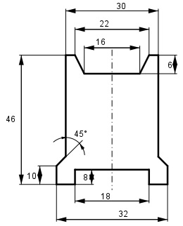

Aufgabe 201 Wie groß ist der Schnittverlust für 100 Bleche, wenn das fertige Teil aus einem 32 mm * 46 mm großen Blech hergestellt wird?

Schnittverlust = V V = 100 * (Rechteck1 + Trapez1 + 2 * Trapez2) 22 + 16 V = 100 * (8 * 18 mm2 - --------- * 6 mm2 - 2 36 + 35 - 2 * --------- * 1 mm2) 2 V = 100 * (144 mm2 + 114 mm2 + 71 mm2) = = 32 900 mm2